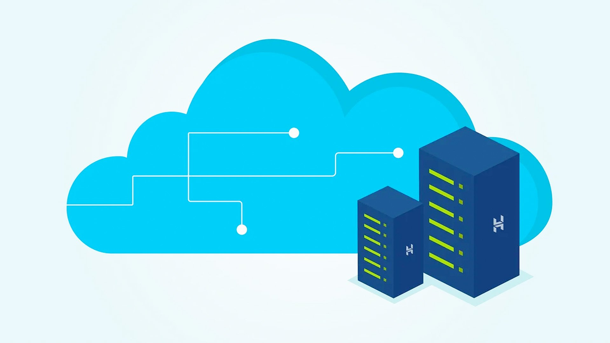

Gestión de Copias de Seguridad
Brandon Mendoza
Brandon Mendoza

Imagen 1: Servidores dedicados al respaldo de bases de datos masivas.
La seguridad informática no se trata solo de evitar intrusiones, sino de garantizar que la información esté disponible cuando algo falla. Los backups son la última línea de defensa contra la pérdida de datos provocada por desastres físicos o lógicos. En la actualidad, el aumento de ataques de secuestro de datos hace que tener una copia actualizada sea un requisito obligatorio para cualquier profesional del área tecnológica.
Para implementar un sistema de respaldo eficiente, debemos considerar el volumen de datos y la frecuencia de actualización. No todos los archivos requieren el mismo nivel de protección, por lo que se utilizan diferentes herramientas y metodologías según el caso.

Imagen 2: Verificación manual de logs de respaldo en consola.
| Método | Carga de Sistema | Almacenamiento | Restauración |
|---|---|---|---|
| Total | Alta | Máximo | Inmediata |
| Incremental | Baja | Mínimo | Dependiente |
| Diferencial | Media | Moderado | Rápida |
En entornos de producción reales, las empresas suelen aplicar un esquema donde se hace un respaldo total los fines de semana y respaldos diferenciales cada noche. Esto equilibra el uso de los servidores durante las horas de trabajo y asegura que, en caso de fallo el jueves, solo se pierdan unas pocas horas de actividad. Las plataformas de nube como AWS o Azure facilitan esto mediante scripts automatizados que envían los datos a regiones geográficas distintas.

Imagen 3: Mapa de replicación de datos en diferentes nodos globales.
El valor de una copia de seguridad se descubre en el momento del desastre. Implementar estas estrategias reduce drásticamente el tiempo de inactividad y protege la reputación de la organización. Es fundamental que cada técnico de soporte y administrador de sistemas domine estas herramientas para asegurar la integridad de la infraestructura digital moderna.